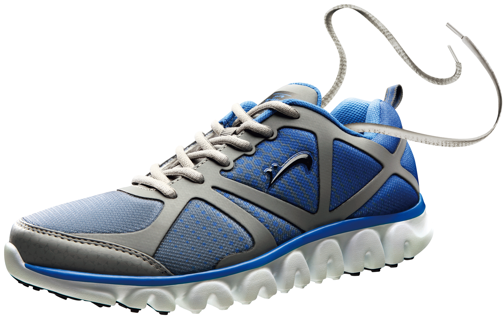

Nike uses premium materials and strong construction, ensuring the shoes stay durable even with heavy use.Nike uses premium materials and strong construction, ensuring the shoes stay durable even with heavy use.Nike uses premium materials and strong construction, ensuring the shoes stay durable even with heavy use.Nike uses premium materials and strong construction, ensuring the shoes stay durable even with heavy use.Nike uses premium materials and strong construction, ensuring the shoes stay durable even with heavy use.